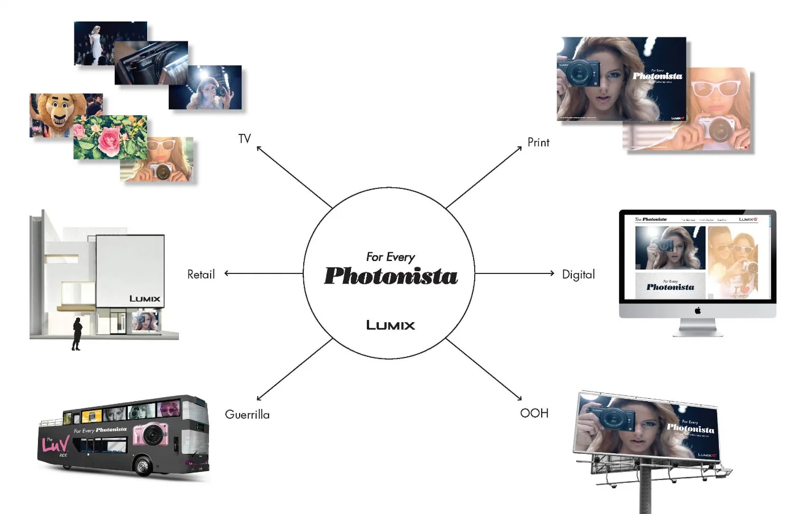
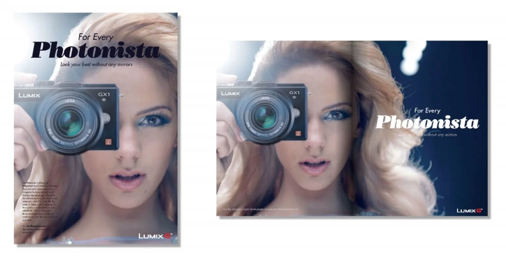
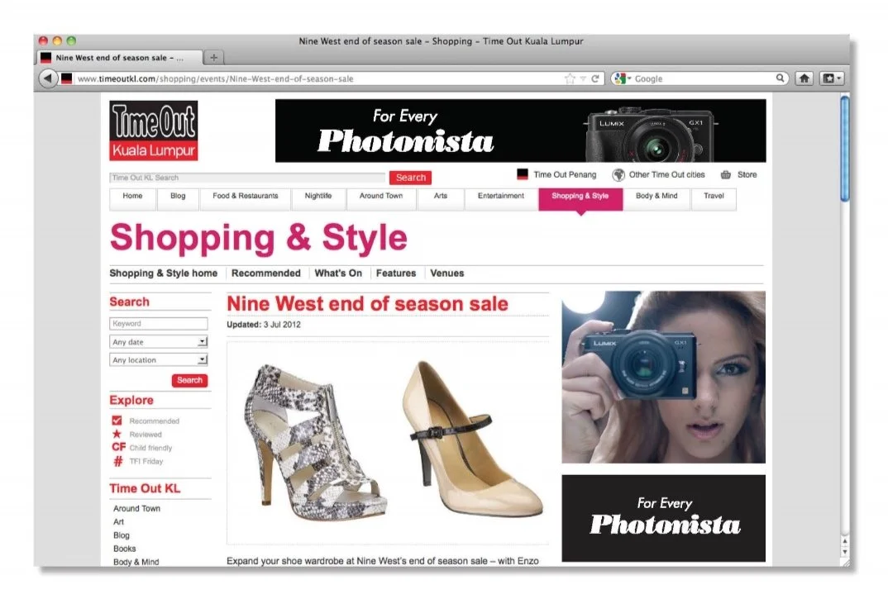
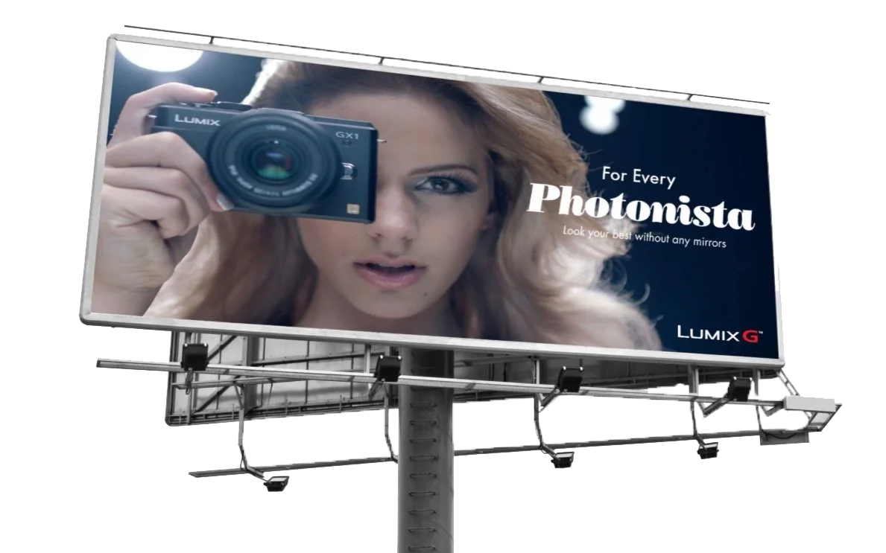
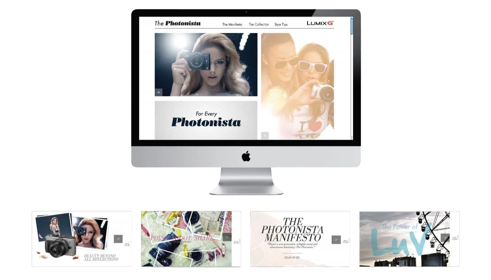
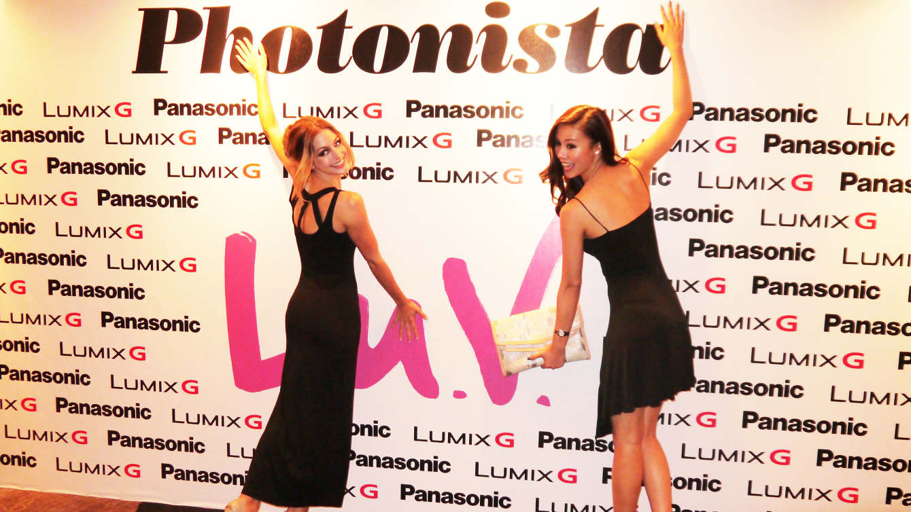
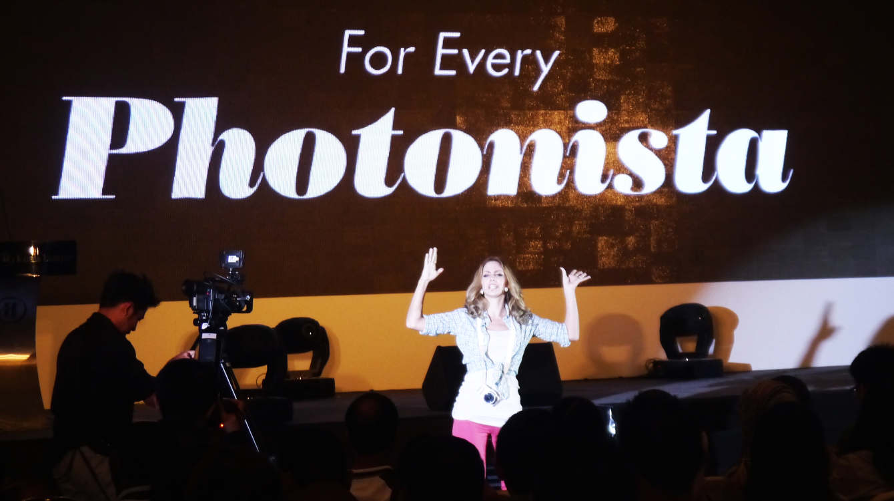
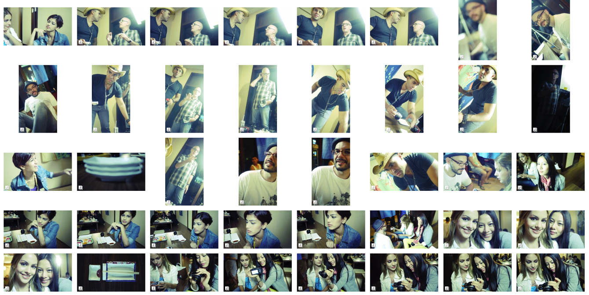
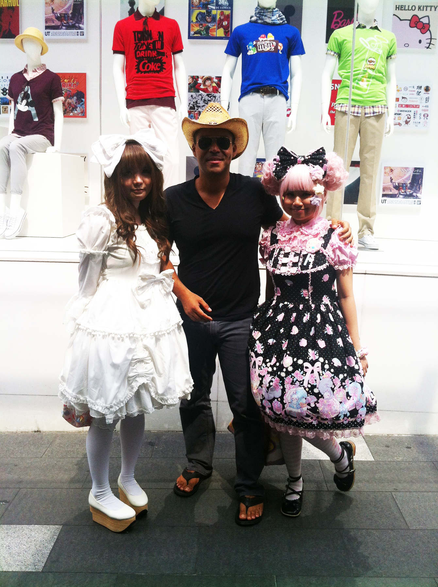

FOR EVERY PHOTONISTA
Creative Director, Writer: Omar Silwany
Creative Director, Art: Jason Borzouyeh
Director & Photographer: Peter Bannan
Dentsu Utama
1 a composer of fashionable looks and true-to-life digital images — passionate to tell her world, her story.
2 a devoted follower of the digital photography lifestyle: distinctive moments, experiences and people that press all the photonistas' buttons.
ORIGIN 2010s: from photography + Spanish suffix -ista, as in Sandinista, terrorista.


Runway Rebel :60 TVC

Campaign 360 Overview


Digital

Out of Home

Microsite

Event — Step & Repeat

Event Activation

Behind the Scenes — Tokyo Shoot

Behind the Scenes — Tokyo Shoot
THE CHALLENGE
Panasonic was launching the Lumix GX1 — their flagship mirrorless camera. The target: fashion-forward women. But "fashion-forward women" is a demographic, not a movement. We needed language that would make the audience recognize themselves. We needed to name the tribe before we could rally it.
THE INSIGHT
She wasn't just taking photos. She was composing her story, frame by frame. Sharing her world the way she lived it. From Fifth Avenue to Ginza, from Indochine dinners to undiscovered beaches — she was the author, curator, and protagonist. She needed a name that matched her confidence. We coined the word: Photonista.
THE WORK
We pitched from opposite sides of the world — New York and Kuala Lumpur. We won. I flew to Malaysia for three months. We launched with "Runway Rebel" — starring Miss Universe Netherlands 2012, Nathalie Den Dekker, as a model who turns the camera on herself mid-show. Directed by New Zealand filmmaker/photographer Peter Bannan. Then rolled it out 360: print, digital, OOH, microsite, events. Filmed in KL and Tokyo. The campaign defined the tribe and gave them a platform.
THE IMPACT
"Photonista" became the rallying cry. The word gave a generation of fashion-forward photographers their identity. The GX1 launch succeeded because we didn't just sell a camera — we named a movement. And when you name the tribe, they show up. This campaign spawned Lu.V. Tokyo and the broader "For Every Photonista" platform that ran for years.